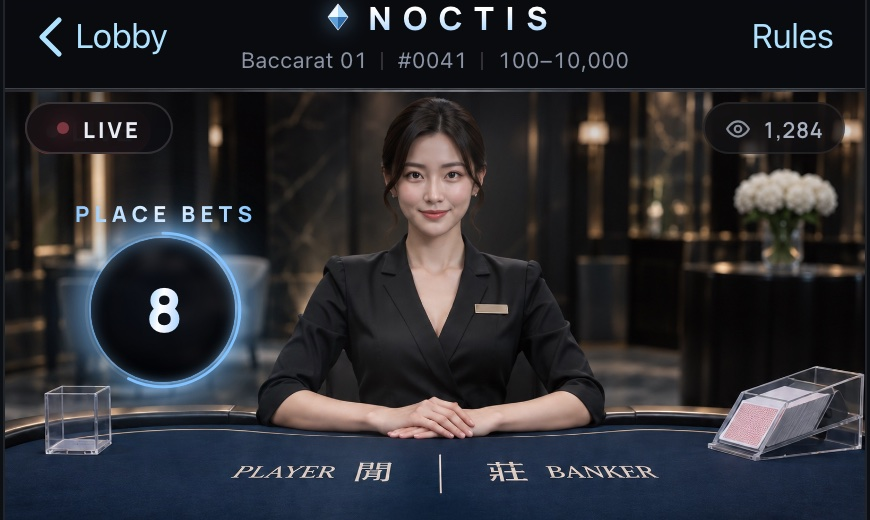
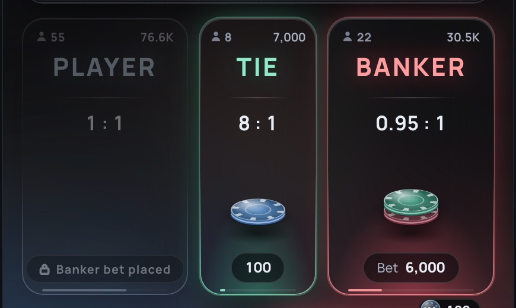
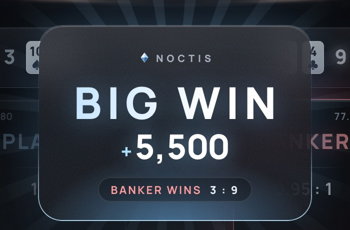
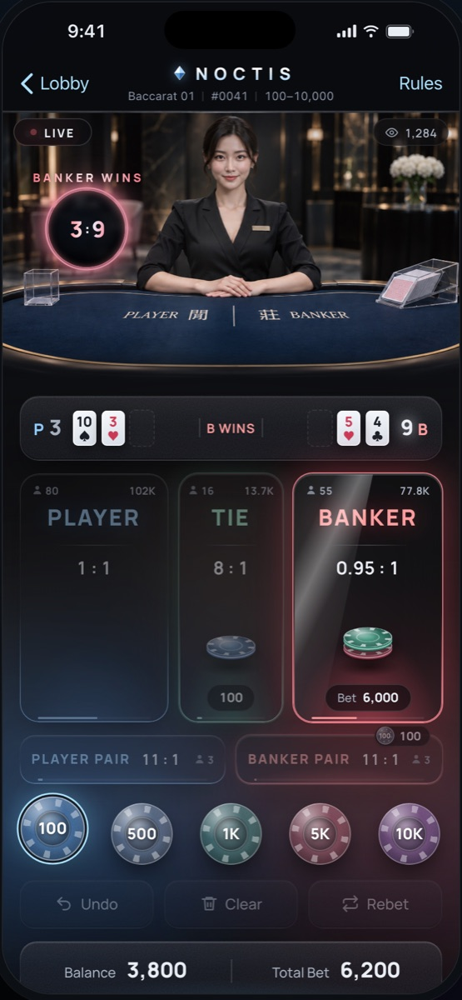
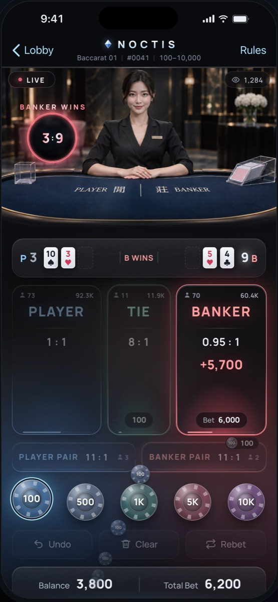
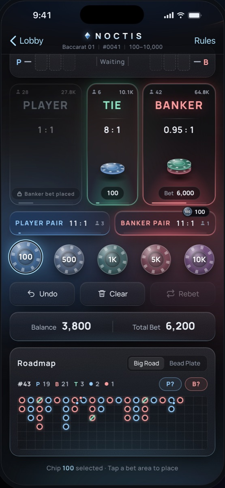

一款手機版真人百家樂介面。以石墨黑與冰藍為基調，用半透明煙燻玻璃面板疊在真人荷官畫面上，籌碼做成磨砂壓克力材質，營造深夜會員制俱樂部的質感與娛樂感。
品牌名 NOCTIS 取自拉丁文的「夜」。想像一間只在深夜營業的會員制俱樂部：燈光壓低、桌面是霧面玻璃、籌碼是冰涼的壓克力。整體走「暗色玻璃擬態（dark glassmorphism）」，但刻意壓低彩度與光暈，只讓真正重要的資訊發光。
所有面板都是半透明深色玻璃：背景模糊、細微雜訊顆粒、上緣一道反光、邊框由上到下漸層，讓荷官畫面的色光透進介面。
冰藍是唯一的品牌強調色，用在倒數光圈、選取狀態、餘額跳動與贏錢時刻，像冰塊折射的冷光。
籌碼是半透明的壓克力圓片，有邊緣刻痕、厚度與高光。押注後在下注區疊成一柱，越押越高。
#0D0E11#AEE2FF#93CCFF#FF9E9E#90E8C6#E9EEF4字體：數字與英文用 Manrope（幾何、粗體、等寬數字），中文用 Noto Sans TC。



原則是：玻璃只當背景層，資訊永遠在最上層、最清楚。質感來自材質與光，而不是讓文字變淡或變花。
| 做法 | 說明 |
|---|---|
| 三色貫穿全局 | 莊紅、閒藍、和綠，一致用在下注區、點數、倒數光環、路紙與慶祝卡片。玩家不用讀字也知道是哪一方。 |
| 清楚的層級 | 閒、和、莊三個主下注區最大最亮；對子邊注次之；籌碼與操作鈕在拇指可及的下半部；路紙放最下方給需要的人看。 |
| 數字優先 | 倒數、點數、金額、賠率一律用粗體等寬數字（Manrope 800），跳動時不會左右晃動。 |
| 對比有底線 | 玻璃面板底色保留足夠深度，主要文字為近白色，次要文字也維持可讀對比；光暈只加在邊框與狀態上，不疊在文字後面。 |
| 狀態用光說話 | 下注中為冰藍、最後 5 秒為珊瑚紅、開獎為贏家色；押注區變亮、禁押區變暗、贏的區掃光。顏色與亮度就是狀態提示。 |
| 動畫有目的 | 每段動畫都在交代「錢去了哪裡」：籌碼飛到下注區、贏的籌碼飛回餘額、輸的籌碼滑向荷官。系統設定「減少動態」時會自動簡化。 |
Demo 會自動下注並跑完整局；第一局固定為莊家天牌勝，打開即可看到 BIG WIN。



| 平台 | 手機直式（寬 430px 以內）；桌機瀏覽時以手機外框呈現。 |
| 技術 | 單一 HTML / CSS / JavaScript 檔，無框架。玻璃效果使用 backdrop-filter，動畫使用 CSS 與 Web Animations API。 |
| 規則 | 標準百家樂補牌規則；閒 1:1、莊 0.95:1、和 8:1、對子 11:1；開和局退回莊閒本金；同局不可同時押莊與閒；每局上限 10,000。 |
| Demo | 自動下注展示模式，四組下注組合輪流；全桌人數與金額為模擬資料。 |